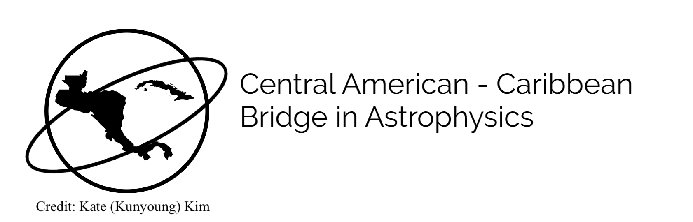

Outreach and Volunteer work
Central American - Caribbean Bridge in Astrophysics
After participating as an intern in the Central American - Caribbean Bridge in Astrophysics Remote research experience for undergraduate students I've mentored two students in their first research experience in astrophysics: Leiany De Oleo Rodríguez, "Investigating the Circumgalactic Medium" and Daniela Azucena Cardona Cuc, "Binarity in young star clusters across the entire mass range".
Month of Astronomy in the Dominican Republic

Since 2023 I've been organizing a series of talks and activities expanding a whole month related to astronomy to introduce high school and university students in the Dominican Republic to the world of astronomy. In 2024 I secured funding for two dominican students to conduct their first research internship in astronomy and to conduct a workshop on astronomical data analysis. Financed by the North American Regional Office of Astronomy for Development, the Heising-Simons Foundation and the International Association of Physics Students.
International Association of Physics Students

This year I am the Editor-in-Chief of the journal of the International Association of Physics Students (IAPS). Previously, I was part of the executive committe of IAPS from 2021 to 2023 first as PR Manager and later as Secretary. During this time I was a member of the Affiliated Commission 5 which is the student branch of of the International Union of Pure and Applied Physics (IUPAP). I managed the relations between IAPS and IUPAP especially relating to communications.
Other volunteer positions
- Social Media Manager, Dominican Physical Society, 2023 - present.
- Teaching Committee Student Representative, Erasmus Mundus Joint Master degree in Astrophysics and Space Science, 2023 - 2024.
- President, Association of Physics Students of the Autonomous University of Physics Students, 2020.